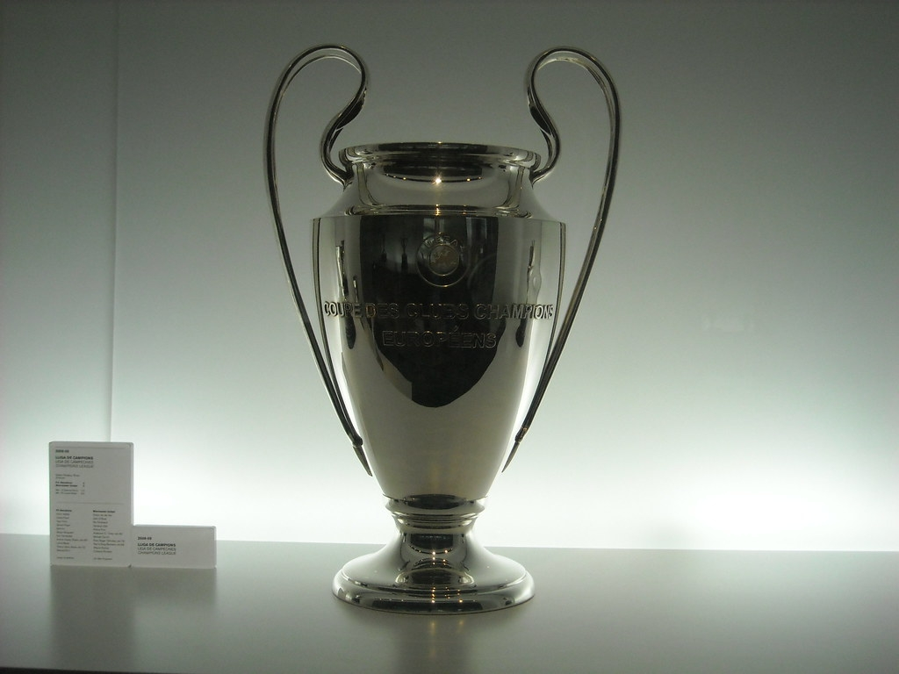
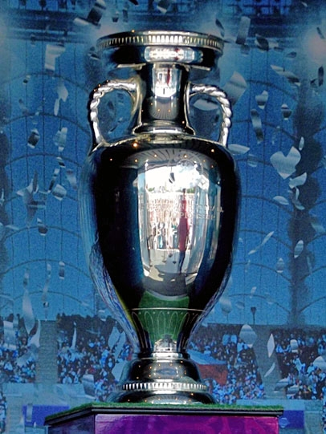
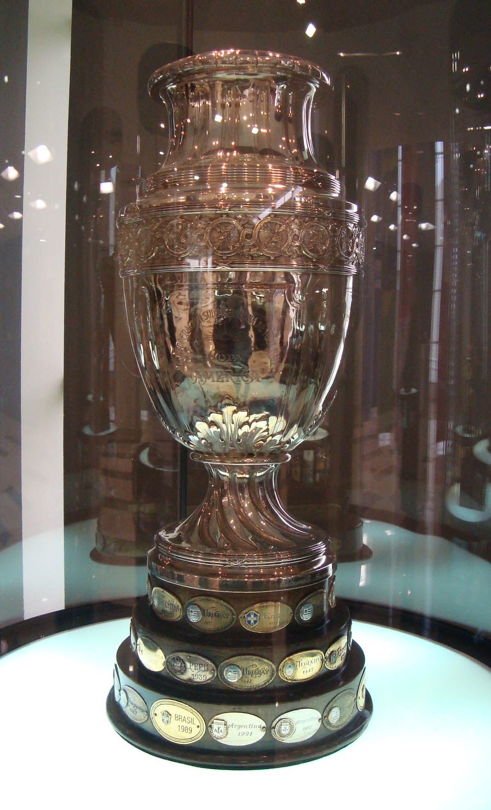
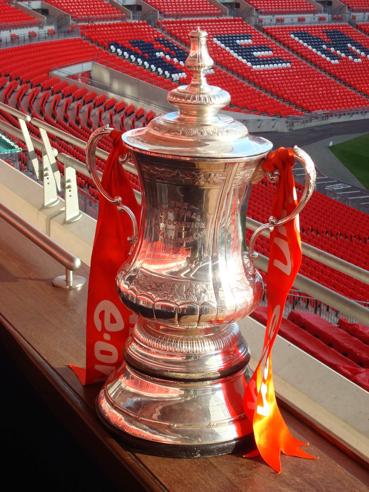
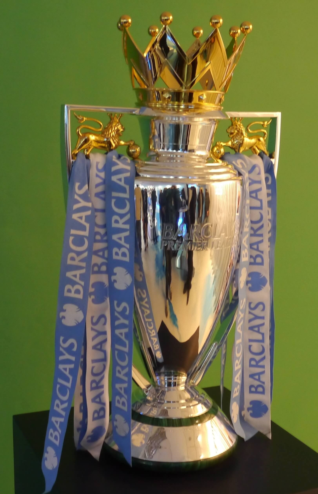
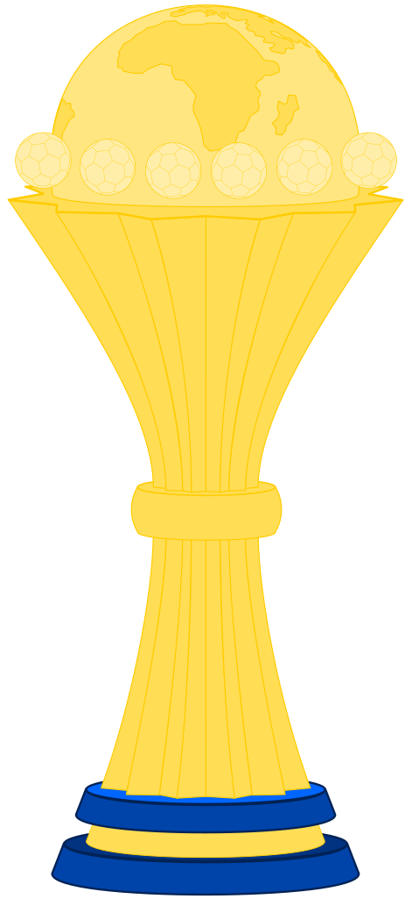
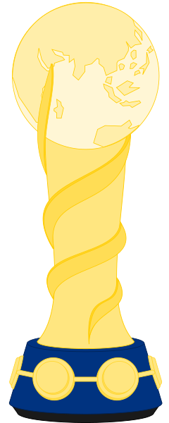
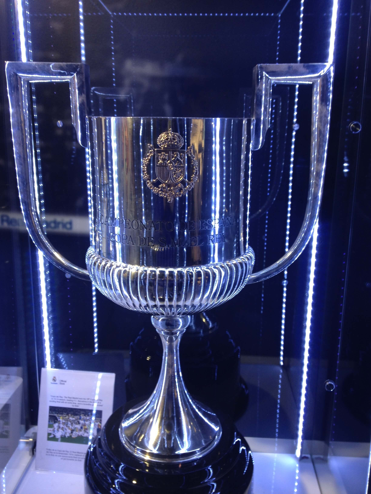

Trophies
Football Trophies and Competitions
1. FIFA World Cup Trophy

The sense of pride and accomplishment the winning team get from holding this trophy must be incredible.
When a team wins this trophy, it’s not just them that are happy either. A world cup win can unite a country. Spreading a healthy wave of joy and winning spirit throughout a nation.
The world cup was officially founded in1930 and has taken place every four years. With the exception of 1942 and 1946 as it was interrupted by the second world war.
Unfortunately, England hasn’t won one since 1966. So, let's move on to number 2.
_______________________________________________________________________________________________________
2. UEFA Champions League Trophy

The UEFA Champions League is one of the most watched competitions in football.
Billions of spectators keep keen eyes on the main stage, and Every pro European club is gunning to win it!
The trophy is magnificent. It’s nicknamed the “big ears” because of the large handles.
English teams have won this trophy 12 times in total. Winners include Liverpool (6), Manchester United (3), Nottingham Forest (2), and Aston Villa (1).
When a team wins this trophy, they also wear the titleholder badge on their kit in the next season's competition.
_______________________________________________________________________________________________________
3. UEFA European Championship Trophy

Fondly known as “the Euros”, this competition takes place every four years, much like the world cup. Although it's commonly held two years out of sync with the world cup.
24 European teams qualify for the Euros, but only one can win the trophy!
It’s called the Henri Delaunay Trophy in honour of the first General Secretary of EUFA who conceptualised the idea of a European championship.
_______________________________________________________________________________________________________
4. Copa America

First taking place in Argentina in 1916, the Copa America is the longest standing continental football competition.
It involves teams associated with the CONMEBOL and two other guest nations. The US, Costa Rica and Mexico are frequent guest competitors.
And, the trophy is beautiful!
The silver design stands 77cm tall and weighs 9kg. It has a 3 level wooden base upon which plaques are attached with the names of the winning team engraved on them.
_______________________________________________________________________________________________________
5. FA Cup

The FA Cup organised by the Football Association is the longest standing football association competition in the world.
Established in July 1871 it’s an annual knockout competition involving teams from the premier league, right down to the 5th division.
The competition is known for “giant killings”. This is when lower division teams beat the odds and knockout teams with far greater resources than their own.
The original FA Cup trophy was stolen in 1895 whilst held by Aston Villa and was never seen again.
A replica was used to replace the original, but a new design replaced it in 1911.
The design is still the same to this day. Although, a replica was produced in 1992 to give to the teams in case anything happens to the original.
The original 1911 trophy was valued £1 million on Antiques Roadshow in 2016.
The current trophy is made from sterling 925 silver. Handcrafted over 250 hours, it weighs 6.3 kg.
_______________________________________________________________________________________________________
6. Premier League Trophy

The premier league is the most watched football tournament in the whole world.
Which is quite shocking seen as how it only takes place in England with English teams.
What’s just as shocking, is that despite the tournament running every year since 1992, only six teams have ever won the premier league!
These are Manchester United (13), Chelsea (5), Manchester City (4), Arsenal (3), Blackburn Rovers (1) and Leicester City (1).
The trophy is something special too. Its design is based on the Three Lions that are associated with English football. The body is solid sterling silver and on top of it is a gold crown. Its base is made of malachite, and a silver band around it is engraved with the names of the winning clubs.
_______________________________________________________________________________________________________
7. La Liga Trophy

La Liga is a Spanish National tournament that features the 20 best teams in Spain. Over the 38 round season between august and may, qualifying teams battle for the trophy.
The modern La liga trophy has a vase shape. It has a stylised ribbin and a blue band around the lower part. The new La Liga logo is also visible on the front of the trophy.
_______________________________________________________________________________________________________
8. Africa Cup of Nations

Taking place every two years, the Africa Cup of Nations involves the 25 best football clubs in Africa.
First held in 1957, the teams battle throughout the tournament to prove they are the best in the continent. Egypt is currently the most successful team, with 7 wins to their name.
The current trophy is a gold plated cup which was made in Italy. The beautiful trophy features a model of the earth which is surrounded by footballs.
_______________________________________________________________________________________________________
9. Confederations Cup

The Confederations CUp is Held in the same country that will host the World Cup the following year.
It’s a highly watched event and a great opportunity for world cup teams to get to know their rivals before the real thing.
The trophy consists of a golden globe which sits on top of a twisted column. The column has “two gold ribbons [that] are wrapped around the central body in a festive, dynamic movement.”. The design is not dissimilar to the world cup trophy, which also features a golden globe and a twisted column.
_______________________________________________________________________________________________________
10. Copa del Rey

Of all the European football competitions, the Copa del Rey has one of the most beautify trophies.
Its simplistic but statuesque design is sophisticated and commanding.
After the 2010 winners Sevilla FC was allowed to keep the trophy for that year, a new trophy was made.
The Silver design weighing 15kg and standing 75cm tall was first awarded to Real Madrid in 2011.
Unfortunately, during post game celebrations, it was dropped from the top of a double decker bus by Sergio Ramos and run over.